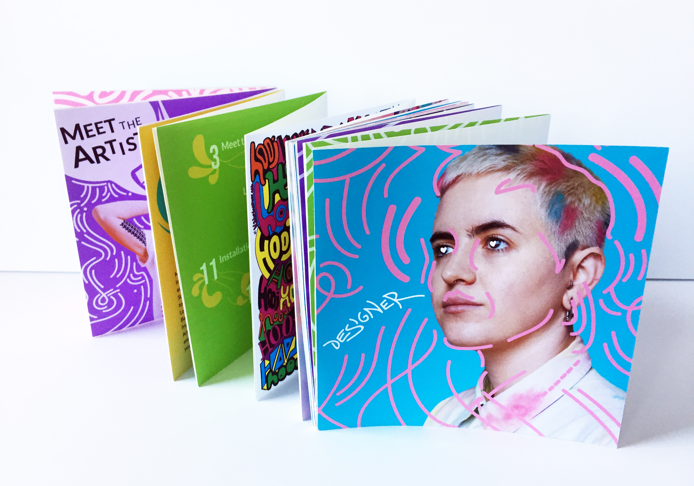
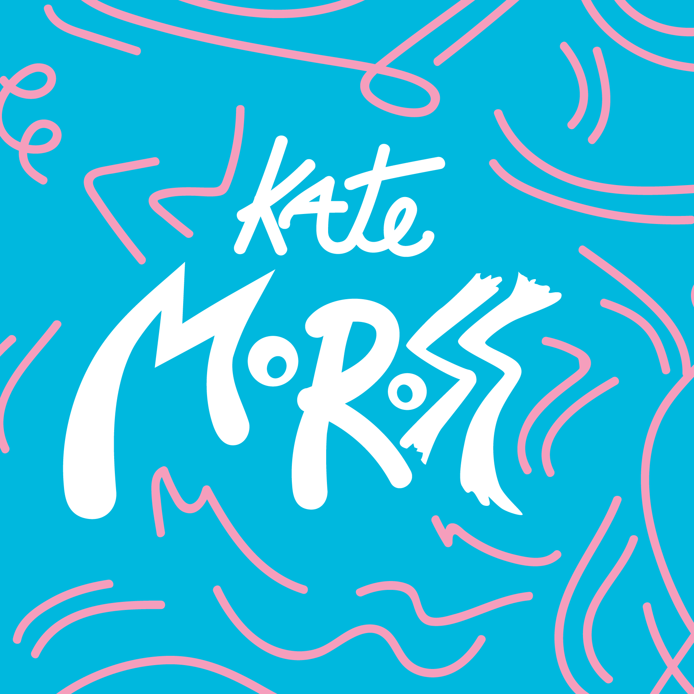
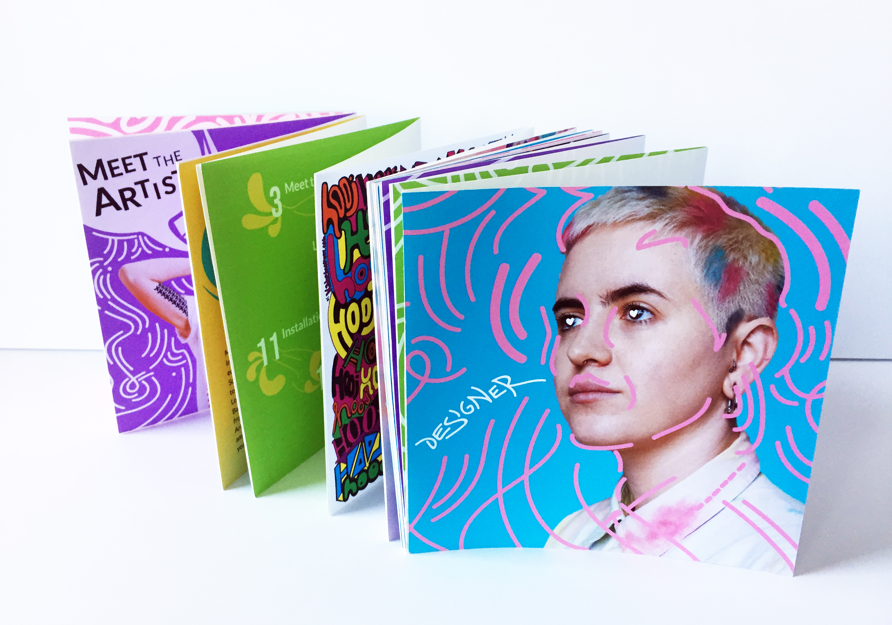
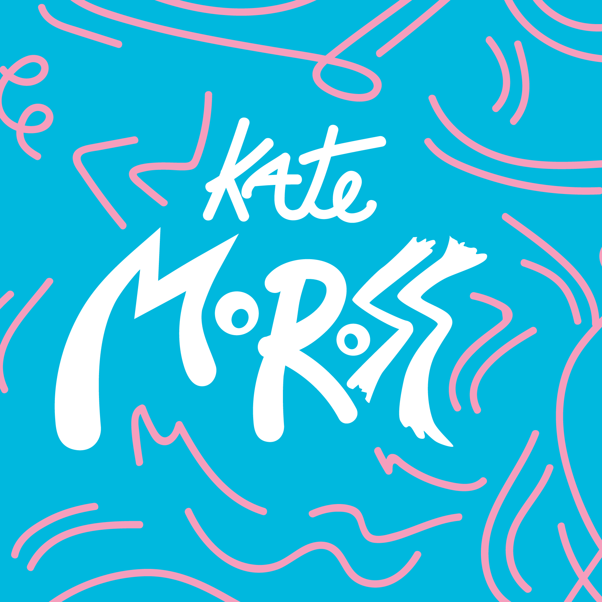

MAJ JENKINS.
KATE MOROSS ACCORDION BOOK
An assignment to create a book that covers a famous graphic designer's work, career, and contribution to the field of design. I chose to feature the life of Kate Moross, a contemporary designer known for their illustrative style and typography.
All photography and artwork featured in this book is property of Kate Moross https://www.katemoross.com/. See the credits page in the accordion book for more information.
 


